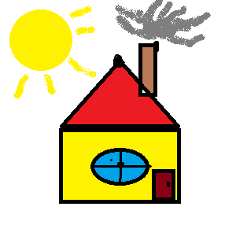

Aken
Aken laseb majja loomulikku valgust ja võimaldab õhutamist. Läbi akna näeb ka õue ja saab jälgida ilma. Joonisel on aken siniste klaasidega ja mustade raamidega, mis jagavad akna neljaks osaks.

Aken laseb majja loomulikku valgust ja võimaldab õhutamist. Läbi akna näeb ka õue ja saab jälgida ilma. Joonisel on aken siniste klaasidega ja mustade raamidega, mis jagavad akna neljaks osaks.